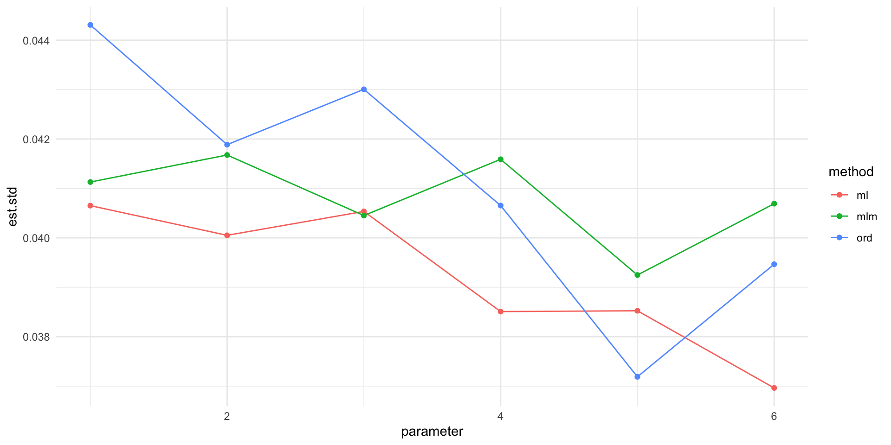

x1 x2 x3 x4 x5 x6
1 -0.6231198 0.98570222 0.3642348 -0.4894269 0.1631721 1.0512031
2 -0.5284359 0.02540388 -0.4231360 -0.9600514 0.5270096 -0.5398607Handling non-normal data
Multivariate normality is not normal
CFA and SEM theory first developed for multivariate normal (MVN) data. The default ML estimator assumes multivariate normality.
However, data are rarely MVN.
- Either we have continuous non-normal data (not often)
- Or, we have discrete data (very often)
- Likert scales
- Sum scores
Handling non-normal continuous data
We can use the MLM estimator and all is good wrt standard errors.
For model fit \(\chi^2\) there are many options. See Foldnes, Moss, and Grønneberg (2025)
- Satorra-Bentler scaling is the classic approach
- The scaled-and-shifted test is another alternative, it is very conservative (low power)
- Some new approaches (known as pEBA) soon to implemented in lavaan looks promising!
Generating a non-normal dataset
Testing model fit under non-normality
Let us fit the data to the model using lavaan with MLM
lavaan 0.6.17 ended normally after 21 iterations
Estimator ML
Optimization method NLMINB
Number of model parameters 13
Number of observations 500
Model Test User Model:
Standard Scaled
Test Statistic 7.826 5.710
Degrees of freedom 8 8
P-value (Chi-square) 0.451 0.680
Scaling correction factor 1.371
Satorra-Bentler correction
Test Statistic 7.826 5.799
Degrees of freedom 8 8
P-value (Chi-square) 0.451 0.670
Scaling correction factor 1.426
Shift parameter 0.311
simple second-order correction
Parameter Estimates:
Standard errors Robust.sem
Information Expected
Information saturated (h1) model Structured
Latent Variables:
Estimate Std.Err z-value P(>|z|)
F1 =~
x1 1.019 0.090 11.354 0.000
x2 0.929 0.111 8.374 0.000
x3 0.905 0.116 7.772 0.000
F2 =~
x4 0.937 0.128 7.330 0.000
x5 1.202 0.159 7.568 0.000
x6 1.025 0.095 10.825 0.000
Covariances:
Estimate Std.Err z-value P(>|z|)
F1 ~~
F2 0.516 0.058 8.964 0.000
Variances:
Estimate Std.Err z-value P(>|z|)
.x1 0.667 0.129 5.178 0.000
.x2 1.094 0.200 5.465 0.000
.x3 1.109 0.189 5.860 0.000
.x4 1.282 0.274 4.679 0.000
.x5 1.160 0.190 6.098 0.000
.x6 1.005 0.176 5.722 0.000
F1 1.000
F2 1.000 semTests pvalue
Both SB and scaled-shifted p-values indicates good fit. semTests package reports
sb_ml ss_ml peba4_rls
0.680 0.670 0.673 The peba4_rls method was found to outperform SB and scaled-and-shifted.
ps sumscores (a sum of correct answers on a test) may be treated as continuous if reasonably many levels exist (>7)
What about ordinal-categorical data?
Ongoing discussion: Can we treat ordinal data as continous?
Well-cited paper answers “yes” if data looks normal and there are more than, say, 5 levels (Rhemtulla, Brosseau-Liard, and Savalei 2012)
However, the picture is more complicated, see (Foldnes and Grønneberg 2022)
Best advice: Use methods for ordinal-categorical data. But be aware that there is an underlying normality assumption, as next illustrated
Ordinal data interpreted as discretized data
Let us discretize a normal dataset
Correlations when continuous

Correlations after discretizing are weaker
This means that treating ordinal data as continuous will find weaker factor loadings
Treat data as ordinal: DWLS estimation
Standardized factor loadings are larger for DWLS
lhs op rhs est.std se z pvalue ci.lower ci.upper
1 F1 =~ x1 0.670 0.044 15.113 0 0.583 0.757
2 F1 =~ x2 0.748 0.042 17.870 0 0.666 0.831
3 F1 =~ x3 0.655 0.043 15.227 0 0.571 0.739
4 F2 =~ x4 0.661 0.041 16.266 0 0.582 0.741
5 F2 =~ x5 0.661 0.037 17.768 0 0.588 0.734
6 F2 =~ x6 0.811 0.039 20.538 0 0.733 0.888 lhs op rhs est.std se z pvalue ci.lower ci.upper
1 F1 =~ x1 0.629 0.041 15.466 0 0.549 0.708
2 F1 =~ x2 0.687 0.040 17.156 0 0.609 0.766
3 F1 =~ x3 0.637 0.041 15.726 0 0.558 0.717
4 F2 =~ x4 0.628 0.039 16.319 0 0.553 0.704
5 F2 =~ x5 0.628 0.039 16.289 0 0.552 0.703
6 F2 =~ x6 0.767 0.037 20.740 0 0.694 0.839DWLS comes closer than ML to “original” parameter values
forig <- cfa(model, normsample, std.lv=T)#true values
orig <- standardizedsolution(forig)[1:6, "est.std"]
ord <- standardizedsolution(ford)[1:6, "est.std"]
cont <- standardizedsolution(fcont)[1:6, "est.std"]
df <- data.frame(est.std=c(orig, ord, cont),
method=rep(c("orig", "ord", "cont"), each=6),
parameter=rep(1:6,3))
ggplot(df, aes(parameter, est.std, group=method, color=method))+
geom_point()+geom_line()The underlying normality assumption for DWLS
DWLS assumes what we have simulated: That the data comes from discretizing a MVN dataset. But what if the underlying dataset is not normal (and how can we check this?)
ordsample2 <- sapply(nonnormsample, cut, breaks=c(-Inf, thresholds,Inf), labels=F)#not underlying normality
colnames(ordsample2) <- colnames(normsample)
ford2 <- cfa(model, data=ordsample2, ordered=colnames(ordsample), std.lv=T)
fcont2 <- cfa(model, data=ordsample2, std.lv=T)
forig <- cfa(model, nonnormsample, std.lv=T)#true values
orig <- standardizedsolution(forig)[1:6, "est.std"]
ord <- standardizedsolution(ford2)[1:6, "est.std"]
cont <- standardizedsolution(fcont2)[1:6, "est.std"]
df <- data.frame(est.std=c(orig, ord, cont),
method=rep(c("orig", "ord", "cont"), each=6),
parameter=rep(1:6,3))Here we have a non-normal continuum that has been discretized. We have estimated with DWLS and with ML.
There is no clear winner
Both methods perform poorly

There is no way to detect underlying normality of this kind! Hence, ordinal data are inherently problematic. But we can at least say that more levels is better (at least 7 levels)
If ML is chosen, use estimator=“MLM”
If you have reasons to use ML estimation (treating data as continuous), request robust standard error (estimator=“MLM”), and use pEBA or SB test statistics
The standard errors are biased with ML
ford <- cfa(model, data=ordsample, ordered=colnames(ordsample), std.lv=T)
fcontml <- cfa(model, data=ordsample, std.lv=T)
fcontmlm <- cfa(model, data=ordsample, std.lv=T, estimator="MLM")
ord <- standardizedsolution(ford)[1:6, "se"]
ml <- standardizedsolution(fcontml)[1:6, "se"]
mlm <- standardizedsolution(fcontmlm)[1:6, "se"]
df <- data.frame(est.std=c( ord, ml, mlm),
method=rep(c( "ord", "ml", "mlm"), each=6),
parameter=rep(1:6,3))Standard error estimates
A digression: Reliability
Either cronbachs \(\alpha\) or \(\Omega\), as implemented in the psych package.
Reliability analysis
Call: alpha(x = ordsample[, 1:3])
raw_alpha std.alpha G6(smc) average_r S/N ase mean sd median_r
0.69 0.69 0.6 0.42 2.2 0.024 3.5 0.94 0.42
95% confidence boundaries
lower alpha upper
Feldt 0.64 0.69 0.73
Duhachek 0.64 0.69 0.74
Reliability if an item is dropped:
raw_alpha std.alpha G6(smc) average_r S/N alpha se var.r med.r
x1 0.61 0.61 0.44 0.44 1.6 0.035 NA 0.44
x2 0.58 0.59 0.41 0.41 1.4 0.037 NA 0.41
x3 0.59 0.59 0.42 0.42 1.5 0.036 NA 0.42
Item statistics
n raw.r std.r r.cor r.drop mean sd
x1 500 0.77 0.78 0.59 0.49 3.5 1.2
x2 500 0.79 0.79 0.62 0.51 3.5 1.2
x3 500 0.79 0.79 0.61 0.50 3.5 1.2
Non missing response frequency for each item
1 2 3 4 5 miss
x1 0.09 0.07 0.35 0.26 0.23 0
x2 0.09 0.07 0.33 0.27 0.24 0
x3 0.11 0.05 0.33 0.25 0.26 0References
Foldnes, Njål, and Steffen Grønneberg. 2022. “The Sensitivity of Structural Equation Modeling with Ordinal Data to Underlying Non-Normality and Observed Distributional Forms.” Psychological Methods 27 (4): 541.
Foldnes, Njål, Jonas Moss, and Steffen Grønneberg. 2025. “Improved Goodness of Fit Procedures for Structural Equation Models.” Structural Equation Modeling: A Multidisciplinary Journal 32 (1): 1–13.
Rhemtulla, Mijke, Patricia É Brosseau-Liard, and Victoria Savalei. 2012. “When Can Categorical Variables Be Treated as Continuous? A Comparison of Robust Continuous and Categorical SEM Estimation Methods Under Suboptimal Conditions.” Psychological Methods 17 (3): 354.